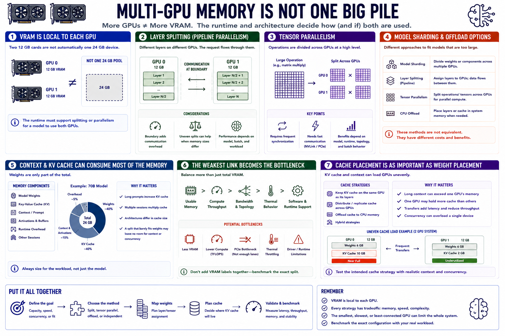

VRAM, Memory, and Model Splitting
Connecting to LMS... Progress: in progress

Narration
VRAM is normally local to each GPU. Installing two cards with 12 gigabytes each does not automatically create one transparent 24-gigabyte device. The runtime must support splitting or parallelism for a model to use both.
Layer splitting places different model layers on different GPUs. A request moves through those layers, so the boundary between devices can add communication overhead. Uneven splits may be useful when memory sizes differ.
Tensor parallelism divides mathematical operations across GPUs at a high level. It can use several devices simultaneously but requires synchronization and fast communication. Benefits depend on model, runtime, topology, and batch behavior.
Model sharding is the broader idea of dividing weights or components. CPU offload can place some layers or cache in system memory when GPU capacity is insufficient, trading speed for fit. These methods are not equivalent.
Context memory and key-value cache can be large, especially with long prompts, multiple sessions, or certain model architectures. A weight split that barely fits may leave no room for the intended context or concurrency.
The smallest, slowest, or least-connected GPU can become a bottleneck. Balance should consider usable memory, compute, bandwidth, thermal behavior, and software capability. Benchmark the exact split rather than adding VRAM labels together.
Cache placement can be as important as weight placement. Long context and simultaneous sessions may load one device unevenly or require transfers, so test the intended cache strategy and concurrency.